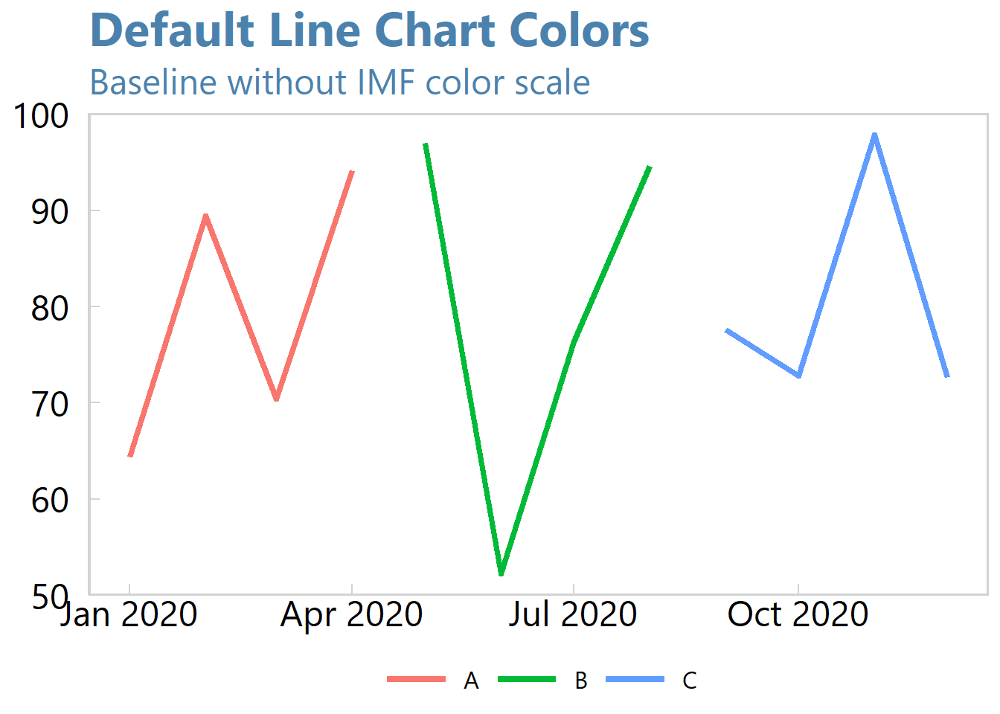
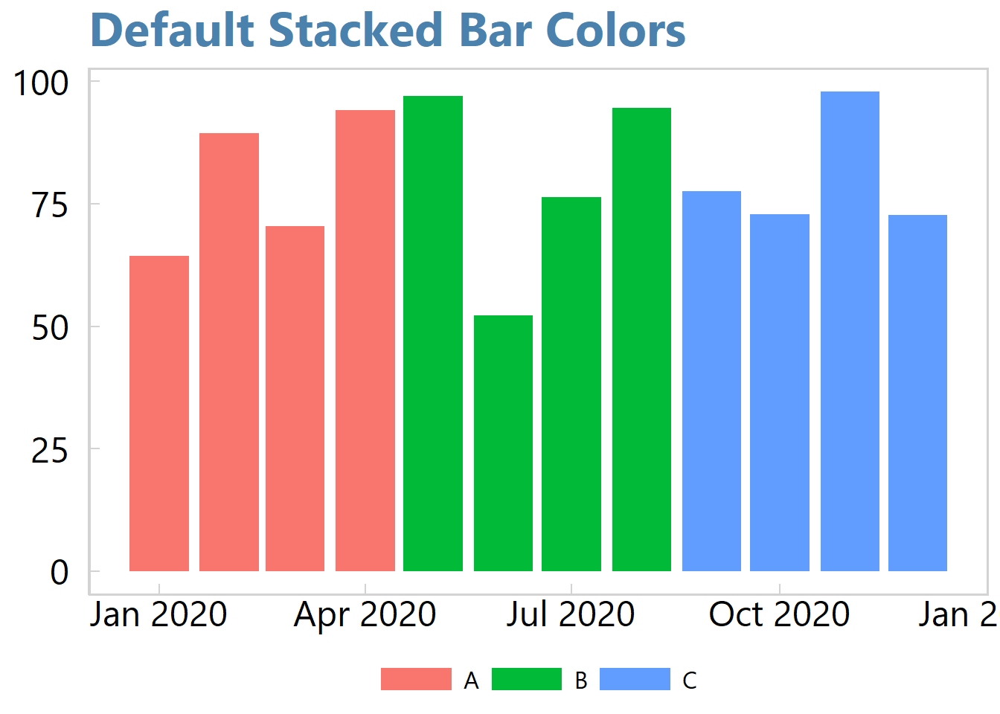
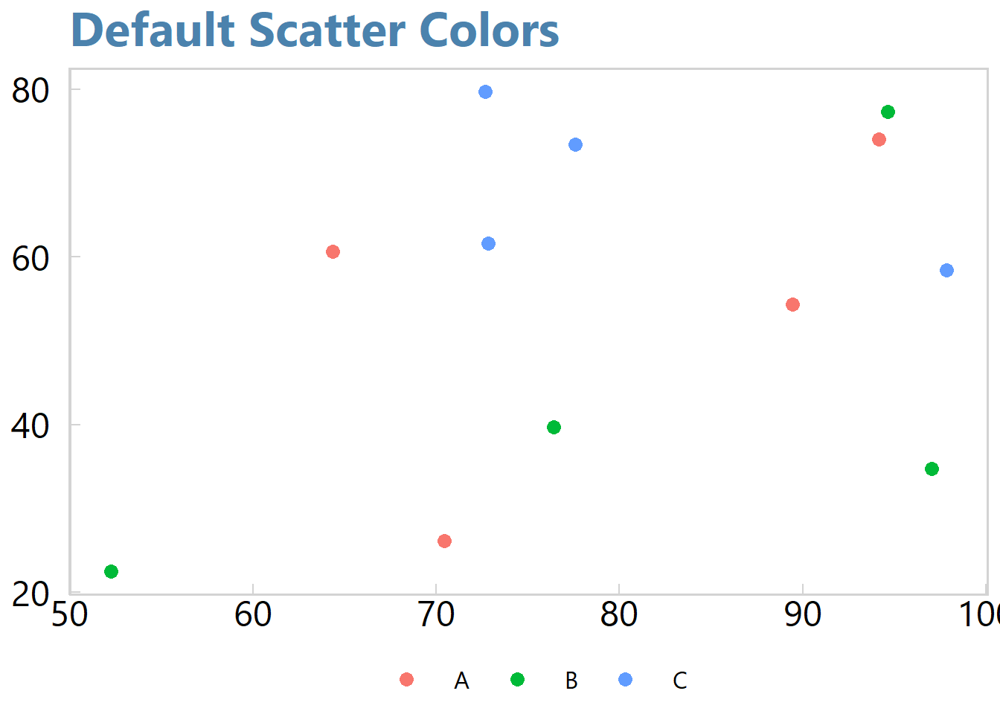
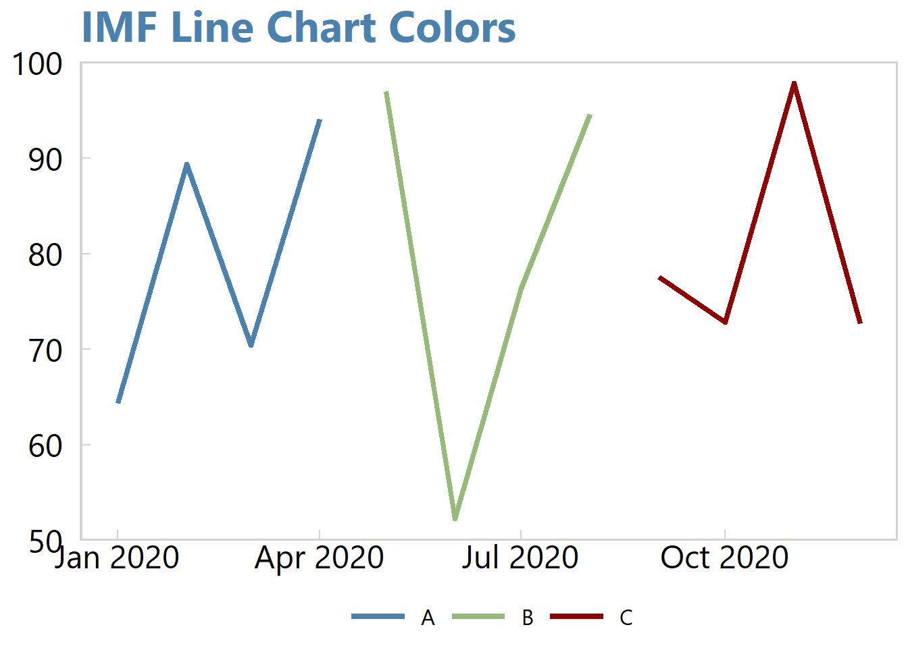
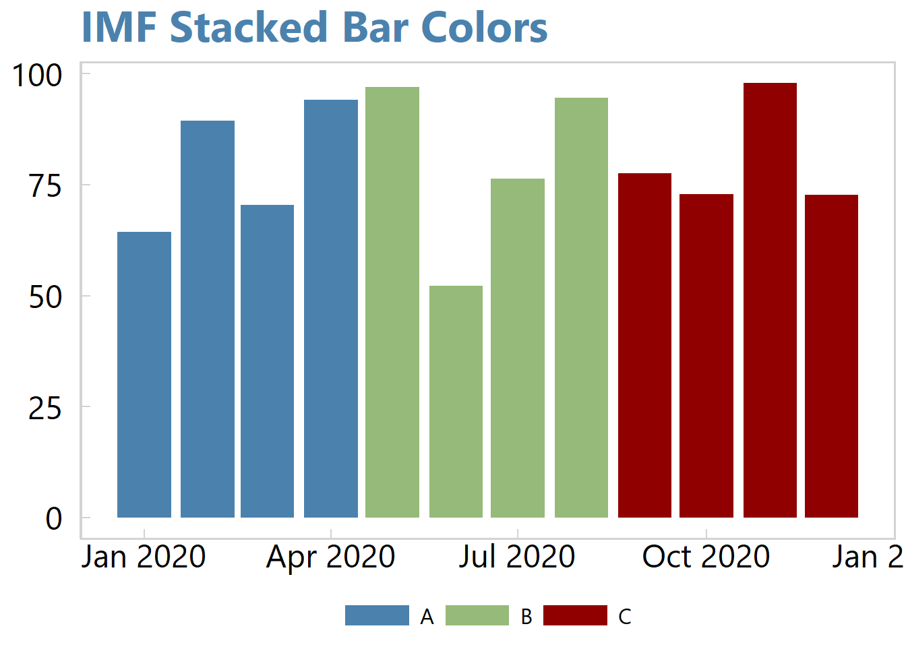
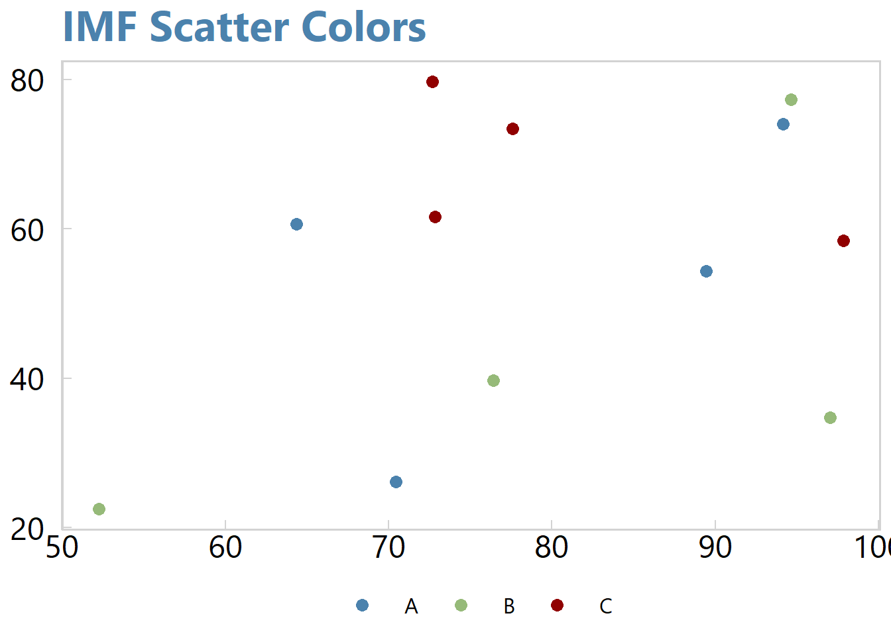
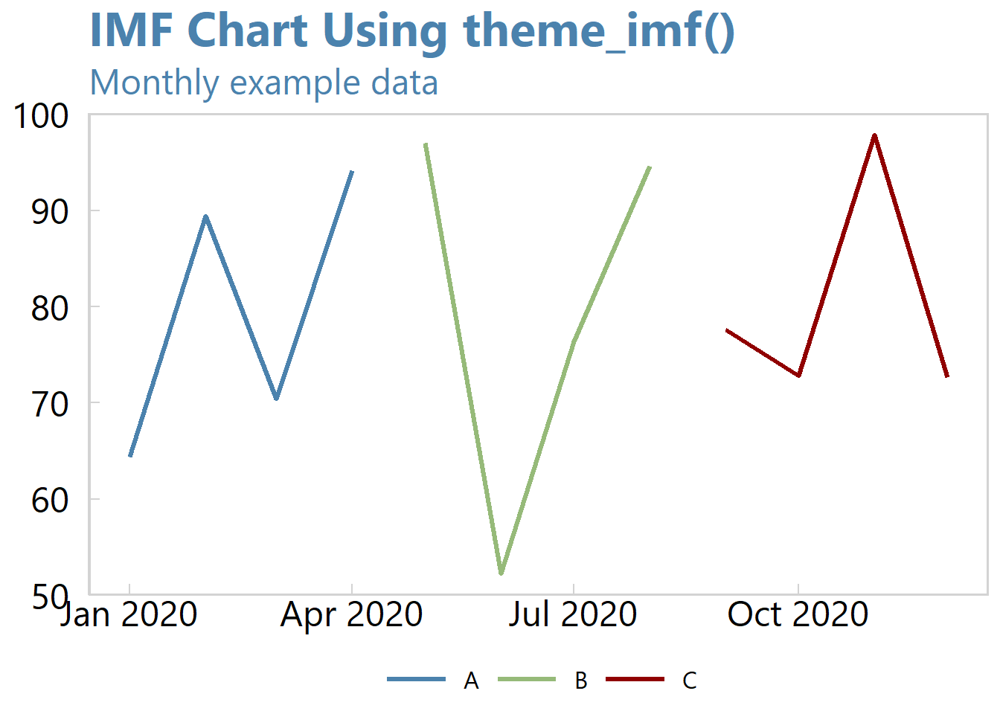

library(imfbookr)
library(ggplot2)
library(dplyr)
set.seed(123)
test_data <- data.frame(
dates = seq(as.Date("2020-01-01"), by = "month", length.out = 12),
category = rep(c("A", "B", "C"), each = 4),
value1 = runif(12, 50, 100),
value2 = runif(12, 20, 80)
)imfbookr
imfbookr provides helper functions to produce ggplot charts with IMF themes.
New IMF Staff Report Chart Themes (2027)
The IMF has introduced new themes for charts in staff reports. The main changes are:
- Font: Arial replaces Segoe UI.
- Chart titles: Titles are now black rather than blue.
- Blue color: The previous IMF blue has been replaced by a different shade of blue.
To use the new themes, replace theme_imf() and theme_imf_panel() with theme_imf_2027() and theme_imf_panel_2027(), respectively. The new blue is available as imf_blue_2027.
The previous themes remain available for charts using the earlier style.
Pre-requisites
Before installing imfbookr, you need devtools if you do not already have it.
# Install devtools if you don't have it
install.packages("devtools")
library(devtools)Installing imfbookr
On most computers you can install directly from GitHub:
library(remotes)
remotes::install_git("https://github.com/BasBBakkerIMF/imfbookr.git")On some IMF computers that does not work. In that case, use this fallback:
url <- "https://codeload.github.com/BasBBakkerIMF/imfbookr/tar.gz/HEAD"
tf <- tempfile(fileext = ".tar.gz")
curl::curl_download(url, tf)
remotes::install_local(tf)After installation, load the package with:
library(imfbookr)Features
- Predefined IMF color palettes for charts.
- Custom ggplot2 themes (e.g.,
theme_imf_panel()).
Usage
The following examples demonstrate how to use imfbookr functions to quickly generate IMF-style charts. We first create some example data, then compare default ggplot2 styling with the custom IMF palette and themes.
IMF Color Palettes
The package includes a set of predefined color constants and palettes consistent with IMF/WEO visual standards. You can use these colors directly in plots or via helper scales like scale_imf_colors().
Quick start (example data)
To illustrate functionality, we generate a simple dataset with 12 months of values across three categories:
Before applying IMF-specific functions, here’s what the default ggplot2 output looks like for a line, bar, and scatter chart.
# Line
ggplot(test_data, aes(dates, value1, color = category)) +
geom_line(linewidth = 1.5) +
labs(title = "Default Line Chart Colors",
subtitle = "Baseline without IMF color scale")
# Stacked bar
ggplot(test_data, aes(dates, value1, fill = category)) +
geom_bar(stat = "identity", position = "stack") +
labs(title = "Default Stacked Bar Colors")
# Scatter
ggplot(test_data, aes(value1, value2, color = category)) +
geom_point(size = 3) +
labs(title = "Default Scatter Colors")
Now we apply the IMF color palette using scale_imf_colors(). This ensures all charts use standardized IMF colors.
# Line with IMF colors
ggplot(test_data, aes(dates, value1, color = category)) +
geom_line(linewidth = 1.5) +
scale_imf_colors() +
labs(title = "IMF Line Chart Colors")
# Stacked bar with IMF colors
ggplot(test_data, aes(dates, value1, fill = category)) +
geom_bar(stat = "identity", position = "stack") +
scale_imf_colors() +
labs(title = "IMF Stacked Bar Colors")
# Scatter with IMF colors
ggplot(test_data, aes(value1, value2, color = category)) +
geom_point(size = 3) +
scale_imf_colors() +
labs(title = "IMF Scatter Colors")
IMF Chart Themes
Use theme_imf() for a standalone chart. It applies the standard IMF formatting to the plot, while scale_imf_colors() controls the series colors.
ggplot(test_data, aes(dates, value1, color = category)) +
geom_line(linewidth = 1.2) +
scale_imf_colors() +
labs(
title = "IMF Chart Using theme_imf()",
subtitle = "Monthly example data",
x = NULL,
y = "Value"
) +
theme_imf()
For multi-chart presentations, use theme_imf_panel() with patchwork to apply consistent panel formatting to the individual charts. The following example combines three charts into one figure.
library(patchwork)
p1 <- ggplot(test_data, aes(dates, value1, color = category)) +
geom_line(linewidth = 1.5) +
scale_imf_colors() +
labs(title = "IMF Line Chart", subtitle = "IMF palette")
p2 <- ggplot(test_data, aes(dates, value1, fill = category)) +
geom_bar(stat = "identity", position = "stack") +
scale_imf_colors() +
labs(title = "IMF Stacked Bar", subtitle = "IMF palette")
p3 <- ggplot(test_data, aes(value1, value2, color = category)) +
geom_point(size = 3) +
scale_imf_colors() +
labs(title = "IMF Scatter", subtitle = "IMF palette")
(p1 | p2) / p3 +
plot_annotation(
title = "Panel Test: theme_imf_panel()",
subtitle = "Multiple plots in a panel layout"
) &
theme_imf_panel()